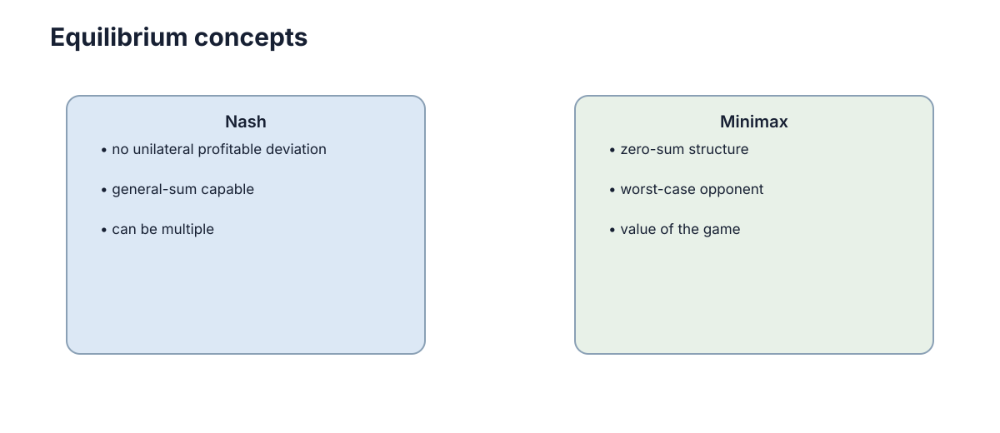

Zero-Sum Games & Minimax
零和博弈的特殊之处在于：一方得到多少，另一方就等量失去多少，于是两个完全对立的效用目标可以被压缩成同一个标量目标。 这次压缩带来三个可以直接使用的推论：博弈值唯一存在、问题可以写成一对互为对偶的线性规划、并且与对抗鲁棒性共享同一个 min-max 结构。下面从收益矩阵出发，先建立博弈值与混合策略，再补上线性规划形式、安全策略的收益下界，以及它在对抗训练中的对应。

零和结构把两个目标变成一个目标
设玩家 1 的纯策略集合为 \(\{1,\dots,m\}\)，玩家 2 的为 \(\{1,\dots,n\}\)，收益矩阵 \(A \in \mathbb{R}^{m \times n}\)，其中 \(A_{ij}\) 表示玩家 1 选 \(i\)、玩家 2 选 \(j\) 时玩家 1 得到的收益。零和在这里是一个代数条件：
由于 \(u_2\) 恒等于 \(-u_1\)，玩家 1 想最大化 \(A_{ij}\)，玩家 2 想最小化同一个数。求解目标由「两个独立效用」退化为「一个标量被一方最大化、被另一方最小化」。无论双方怎么行动，两者之和恒为 0，因此零和博弈又被称为严格竞争博弈。
如果没有随机化，双方只能拿到两个未必相等的保证值：
左边是玩家 1 的 maximin（先假设对手针对自己，再选最好的动作），右边是玩家 2 的 minimax。两者之差被称为对偶间隙。若间隙为 0，收益矩阵存在纯策略鞍点，双方各自固定一个动作即可；若间隙为正，任何纯策略都会被对手利用，必须引入混合策略。
| 结构 | 收益关系 | 优化目标个数 | 是否存在唯一「值」 | 典型例子 |
|---|---|---|---|---|
| 零和 | \(u_2 = -u_1\) | 1 | 是，记为 \(v\) | 石头剪刀布、匹配硬币、攻防对抗 |
| 一般和 | \(u_1, u_2\) 独立 | 2 | 否，只有一组均衡收益 | 定价竞争、团队协作、谈判 |
| 合作型 | 共同收益 | 1 | 是（帕累托最优集） | 联合搬运、共享奖励团队 |
Minimax 原则
Minimax 原则的决策规则是：在对手行为未知、且不愿意对对手的善意下注时，最大化自己能够保证的最低收益。 用混合策略写成
其中 \(\Delta_m = \{x \in \mathbb{R}^m : x_i \ge 0,\ \sum_i x_i = 1\}\) 是玩家 1 的策略单纯形，\(x_i\) 是选择动作 \(i\) 的概率。玩家 2 对称地求解 \(\min_y \max_x x^{\top} A y\)。
这个规则有一个常被忽略的隐含假设：它把对手建模为「知道你的策略并针对性最优响应」的最坏情况对手。因此 minimax 策略在对手理性、自适应或带对抗性时是稳健的，但在对手固定且可预测时往往过于保守。
用一个具体收益矩阵可以直观看到纯策略的局限。设四个元素为 \(A_{11}=4\)、\(A_{12}=0\)、\(A_{21}=1\)、\(A_{22}=3\)，写成表格即：
| 收益 \(A_{ij}\)（行 = 玩家 1，列 = 玩家 2） | 动作 1 | 动作 2 |
|---|---|---|
| 动作 1 | \(4\) | \(0\) |
| 动作 2 | \(1\) | \(3\) |
玩家 2 想压低这个数，因此会挑每一行里较小的那一格：
| 玩家 1 的选择 | 玩家 2 的最坏响应 | 保证收益 |
|---|---|---|
| 纯策略 1（第一行） | 选第二列 | \(0\) |
| 纯策略 2（第二行） | 选第一列 | \(1\) |
| 混合策略 \(x=(1/3,\ 2/3)\) | 任意列 | \(2\) |
纯策略的 maximin 只有 \(1\)，而混合策略把保证收益提高到 \(2\)。保守也是要付代价的：如果对手其实固定只出第一列，玩家 1 直接出第一行可以拿满 \(4\)，而上面的混合策略只能拿到 \(2\)，机会成本是 \(2\) 个单位。所以选择安全策略的前提是「对手不确定且可能针对我」，而不是「对手已知且懒惰」。
混合策略让双方摆脱固定模式
石头剪刀布里任何固定动作都能被克制：出石头会被布克制，出布会被剪刀克制，出剪刀会被石头克制。玩家 1 的收益约定为胜 \(+1\)、负 \(-1\)、平 \(0\)，写成表格（行 = 玩家 1，列 = 玩家 2）为：
| 玩家 1 选择 | 对手出石头 | 对手出剪刀 | 对手出布 |
|---|---|---|---|
| 石头 | \(0\) | \(+1\) | \(-1\) |
| 剪刀 | \(-1\) | \(0\) | \(+1\) |
| 布 | \(+1\) | \(-1\) | \(0\) |
这个矩阵满足反对称性 \(A_{ij} = -A_{ji}\)，正是零和结构的直接体现。当双方都使用均匀策略 \(x = y = (1/3, 1/3, 1/3)\) 时，玩家 1 的期望收益为
因为矩阵全部元素之和恰好为 \(0\)。更关键的是：如果玩家 1 保持均匀，无论玩家 2 选哪一个纯动作，玩家 1 的期望收益都恰好是 \(0\)；反之亦然。也就是说，均匀混合让对手找不到任何能获得正收益的确定性偏离，这就是 Nash 均衡在零和里的具体形态。
这解释了混合策略的真正作用：不是为了提高对某个特定对手的收益，而是让自己的行为不可被确定性利用。 只有当随机化的概率无法被对手事先预测时它才有效；如果对手能推断出你的随机种子或分布，随机化就退化成可被利用的纯策略。同时要意识到随机化的机会成本：若对手其实固定出石头，均匀策略收益为 \(0\)，而固定出布每轮可以拿到 \(+1\)，牺牲的正是这 \(1\) 个单位的稳定收益。
有限两人零和博弈具有清晰的博弈值
当允许混合策略后，von Neumann minimax 定理保证
即两个方向的优化值相等，这个共同的数 \(v\) 称为博弈值（value of the game）。回到上面的 \(2 \times 2\) 例子，玩家 1 以概率 \(p\) 选第一行时，两列的期望收益分别为
令两者相等得到 \(p = 1/3\)，代入得 \(v = 2\)。玩家 2 侧同理以 \(q = 1/2\) 混合，双方的最优值都是 \(2\)，对偶间隙为 \(0\)。可以直接验证这个解：玩家 1 用 \(x=(1/3, 2/3)\) 时，列 1 收益为 \(4/3 + 2/3 = 2\)，列 2 收益为 \(0 + 2 = 2\)；玩家 2 用 \(y=(1/2, 1/2)\) 时，行 1 收益为 \(2 + 0 = 2\)，行 2 收益为 \(0.5 + 1.5 = 2\)。四个方向都恰好等于 \(v\)，这正是均衡的检验标准。
需要注意三条边界条件：
- 定理要求策略集有限且收益有界，无限博弈的取值可能不存在或发生跳变。
- 博弈值描述的是双方都最优时的长期平均收益，不等于任何一局的真实结果。
- 一般和博弈没有这样唯一的值，只能给出均衡策略组合及其收益向量。
线性规划与 Minimax 的等价性
零和博弈不只是「恰好能用」线性规划求解，它在数学上就是一个线性规划问题，而且玩家 1 的问题与玩家 2 的问题互为对偶。玩家 1 侧（原问题）的目标是最大化自己的保证收益下界 \(v\)：
受约束于「无论玩家 2 选哪一列 \(j\)，玩家 1 的期望收益都不低于 \(v\)」：
再加上概率归一化与非负性：
玩家 2 侧（对偶问题）最小化自己的保证损失上界 \(w\)：
受约束于「无论玩家 1 选哪一行 \(i\)，玩家 2 付出的期望损失都不高于 \(w\)」：
两边的最优值必然相等（强对偶定理），即 \(v^{\star} = w^{\star}\)。这既给出了 minimax 定理的一个构造性证明，也给出了实际求解算法：任何线性规划求解器都能算出零和博弈的值与双方的最优混合策略。
| 符号 | 所属问题 | 含义 |
|---|---|---|
| \(x_i\) | 原问题变量 | 玩家 1 选择动作 \(i\) 的概率 |
| \(v\) | 原问题变量 | 玩家 1 的保证收益下界 |
| \(y_j\) | 对偶问题变量 | 玩家 2 选择动作 \(j\) 的概率 |
| \(w\) | 对偶问题变量 | 玩家 2 的保证损失上界 |
| \(A_{ij}\) | 两侧共用的系数 | 玩家 1 在组合 \((i,j)\) 上的收益 |
互补松弛条件给出一个很实用的诊断信息：若某动作 \(i\) 在最优解中概率 \(x_i > 0\)，则它对应的对偶约束 \(\sum_j A_{ij} y_j = v\) 必然取等号，即该动作必须恰好拿到价值 \(v\) 的期望收益，否则它不会被放进支撑集。在前面的 \(2 \times 2\) 例子里，两个动作都在支撑集内，因此行 1 与行 2 的期望收益都等于 \(2\)；如果算出来某个动作的期望收益小于 \(v\) 而它仍然有正概率，说明求解精度不足或收益矩阵被错误建模。
| 失败模式 | 表现 | 根因 | 应对 |
|---|---|---|---|
| 两个目标未合并 | 收益矩阵写成上下不对称的两张表 | 误把一般和当零和 | 先验证是否满足 \(u_2 = -u_1\) |
| 只求纯策略 | maximin 严格小于 minimax | 忽略混合策略 | 用线性规划或支撑枚举求解 |
| 概率被预测 | 随机化后仍被稳定克制 | 随机种子或分布可推断 | 加密随机源或提高分布熵 |
| 收益尺度错乱 | 值随收益缩放而非平移 | 零和对平移敏感、对缩放不敏感 | 归一化收益到固定区间 |
安全策略给出了收益下界
安全策略（security strategy）指的是 max-min 解：无论对手怎么行动，它都能保证收益不低于 \(v\)。这个「下界」的性质来自一个换序不等式：
对任意的 \(x\) 都有 \(\min_y x^{\top} A y \le x^{\top} A y\)，因此取 \(x = x^{\star}\) 得到的值 \(v = \min_y x^{\star\top} A y\) 是一个对所有 \(y\) 都成立的保证：\(x^{\star\top} A y \ge v\)，\(\forall y\)。在零和博弈中该不等式取等号，所以下界 \(v\) 恰好也是对手能做到的最小上界，双方不存在「多拿一点」的空间。在 \(2 \times 2\) 例子里，这个下界就是 \(v = 2\)，即无论对手怎么混合，玩家 1 每局平均至少拿到 \(2\)。
| 维度 | 安全策略（max-min） | 期望最优策略（针对固定对手） |
|---|---|---|
| 优化目标 | \(\max_x \min_y x^{\top} A y\) | \(\max_x x^{\top} A y^{\star}\)（\(y^{\star}\) 视为已知） |
| 保证 | 对任意对手收益 \(\ge v\) | 无下界，对手换策略即失效 |
| 对弱对手收益 | 偏低，常浪费机会 | 高，充分榨取对手弱点 |
| 数据依赖 | 只需要收益矩阵 \(A\) | 需要对手策略分布的估计 |
| 适用场景 | 对手未知、自适应、带对抗性 | 对手固定且可反复观测 |
| 失效条件 | 对手其实是固定且可利用的 | 对手分布随时间发生漂移 |
一句话区分：安全策略买的是最坏情况下的确定性，期望最优策略买的是已知分布下的平均收益。工程上常见的做法是先用安全策略兜底，再在置信度足够高时向期望最优偏移，例如前 \(N\) 局用安全策略观察对手、估计出对手分布后再切换到最佳响应。
现实竞争不一定是零和
零和的成立需要严格的守恒：一方增加多少，另一方就等量减少。现实中的很多竞争并不满足这一点。两家公司打价格战可能同时做大市场，两台机器人争抢同一块充电桩的同时也共享团队奖励，这些都属于一般和结构。
举一个可量化的例子：两家公司都不降价时收益 \((5,5)\)，都降价时收益 \((2,2)\)。两种组合下 \(u_1 + u_2\) 分别是 \(10\) 和 \(4\)，不是常量，因此这是一个典型的一般和博弈，而不是零和。若强行写成 \(u_2 = -u_1\)，模型会认为降价必让对方损失等量收益，从而系统性地偏向攻击性策略，直接删掉了合作空间。
判断方法很直接：列出双方收益，检查是否对任意动作组合都有 \(u_1 + u_2 = 0\)。若这个和随动作变化，就不是零和；若它恒为常量 \(c \ne 0\)，则称为常和博弈，可以平移收益归约成零和；若双方可以同时改善，则是共同利益与利益冲突并存的混合动机博弈。
| 判定 | 收益关系 | 能否直接用 minimax | 建议做法 |
|---|---|---|---|
| 零和 | \(u_1 + u_2 = 0\)，\(\forall (i,j)\) | 可以 | 直接求博弈值 |
| 常和 | \(u_1 + u_2 = c\)，恒为常量 | 可以（平移归约） | 各减去 \(c/2\) 后当零和 |
| 一般和 | \(u_1 + u_2\) 随动作变化 | 不可以 | 求 Nash 均衡 |
| 共同利益 | 存在双方同时改善的组合 | 不可以 | 显式建模合作收益 |
Minimax 在对抗鲁棒性中的对应
对抗鲁棒性把训练写成「在给定扰动半径内最小化最坏情况误差」：
对照本节前面的 \(\min_y \max_x x^{\top} A y\)，两者结构完全一致：外层 \(\min\) 是防御方（对应玩家 2，想压低损失），内层 \(\max\) 是攻击方（对应玩家 1，想在预算内抬高损失），内层对手通过投影梯度上升迭代实现，正是对 \(\max\) 的近似求解。把扰动半径换成策略单纯形，就是零和博弈的混合策略；把 \(\varepsilon\) 设为 \(0\)，就退化成普通的经验风险最小化。
| 概念 | 零和博弈视角 | 鲁棒优化 / 对抗训练视角 |
|---|---|---|
| 内层 \(\max\) | 玩家 1 选混合策略 \(x\) | 攻击者在 \(\|p\| \le \varepsilon\) 内选扰动 |
| 外层 \(\min\) | 玩家 2 选混合策略 \(y\) | 防御者更新参数 \(\theta\) |
| 博弈值 \(v\) | 双方最优时的保证收益 | 最坏情况损失，作为鲁棒性度量 |
| 对偶间隙 | 纯策略被利用的量 | 单步攻击与最强攻击之间的差距 |
| 过拟合信号 | 对手可利用固定模式 | 只有单步攻击被拦住，多步即穿透 |
工程含义很明确：用一个固定攻击强度评估出来的鲁棒性并不可靠，就像用固定对手测零和策略一样。当扰动半径从 \(0\) 增大到 \(\varepsilon\) 时，代理模型的准确率通常会明显下降，下降的幅度比起单步攻击的评估更能反映真实鲁棒边界。真正的鲁棒性报告应当给出「对最强内层响应的损失」，这与报告博弈值而不是报告对某个固定对手的胜率是同一件事。更完整的威胁建模、扰动预算与风险度量见 鲁棒性与风险。
博弈值与策略价值
博弈值描述的是双方都采取最优策略时可保证的收益，它不等于任何一局的实际结果。在石头剪刀布里这一区别尤其明显：\(v = 0\) 只意味着长期平均不亏，单局仍然会赢会输。评价一个策略时应当看它对最坏响应的保证，而不是只报告对某个固定对手的胜率。
三个可直接落地的检查项：
- 用线性规划求出 \(x^{\star}\) 和 \(v\)，然后在仿真里遍历所有纯策略对手 \(y = e_j\)，确认 \(\min_j x^{\star\top} A e_j = v\)，误差应小于收益尺度的 \(1\%\)。
- 检查支撑集：任何满足 \(x_i > 0\) 的动作，其对所有对手列的期望收益都必须等于 \(v\)，否则说明求解未收敛或模型建模有误。
- 检查对偶间隙：若实测 maximin 与 minimax 相差超过收益尺度的 \(1\%\)，通常是求解精度不足，或者收益矩阵被错误建模成了非零和。
最后一个容易混淆的点是「胜率」和「价值」的区别。固定出布对阵固定出石头的胜率是 \(100\%\)，但它对应的价值（对最坏响应）是 \(-1\)：一旦对手改用剪刀，这个策略立刻变成最差。这也是为什么在对抗环境中，策略评估必须附带一个最坏情况对手，而不能只报平均表现。
下一步：把零和结构扩展到双方可以同时改善的一般和情形，见 最佳响应与 Nash 均衡；回到博弈的基本构成与收益矩阵建模，见 博弈模型；如果关心最坏情况误差与安全约束如何在训练中落地，见 鲁棒性与风险；如果关心多个零和子问题在分布式系统中的协调，见 多智能体协调。